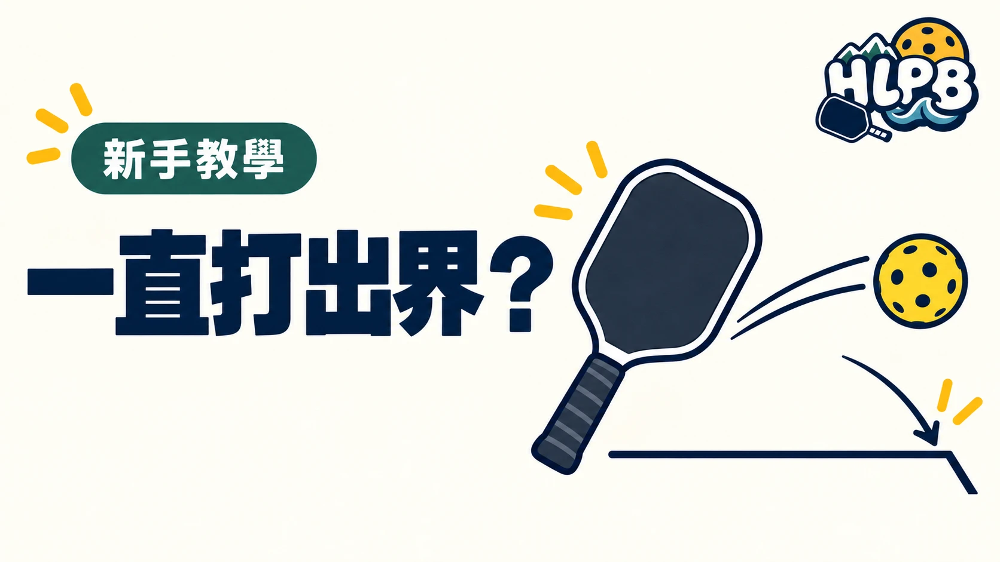

打球時一直出界，很容易懷疑：「是不是這支拍太彈？」器材確實會影響手感，但只看球飛出去，還不能判定原因。
先分清楚自己經常打出底線，還是偏出邊線。練習時把目標放在場內，留一點空間，別每一球都追求壓線。
| 觀察重點 | 練習時先注意 |
|---|---|
| 力道 | 降低揮拍力道，確認能否穩定控制落點 |
| 拍面 | 留意觸球時拍面是否穩定，不要臨時翻動 |
| 擊球位置 | 是否常在身體太近、太後方的位置勉強擊球 |
| 身體平衡 | 是否還在追球，就急著用力揮拍 |
| 目標 | 是否瞄得太靠近底線或邊線 |
這張表是觀察清單，並非看到某種失誤就能直接診斷動作。同樣是出界，也可能有不同原因。
一次先調整一件事。同時改握拍、力道和揮拍方式，反而不容易知道哪個調整有效。
如果降低力道後比較穩定，可以先練控制，再逐步增加速度。若仍經常失誤，請教練觀察完整動作，比只描述「我的球一直出界」更容易找到問題。
換球拍可以改善使用感受，但不會自動修正擊球習慣。先把問題看清楚，再決定是否需要換器材。
來源：HLPB 編輯練習建議。動作調整應依實際觀察，不以本文代替個別教學。
最後查證：2026-10-10｜HLPB 編輯整理，參考來源見內文
返回文章列表